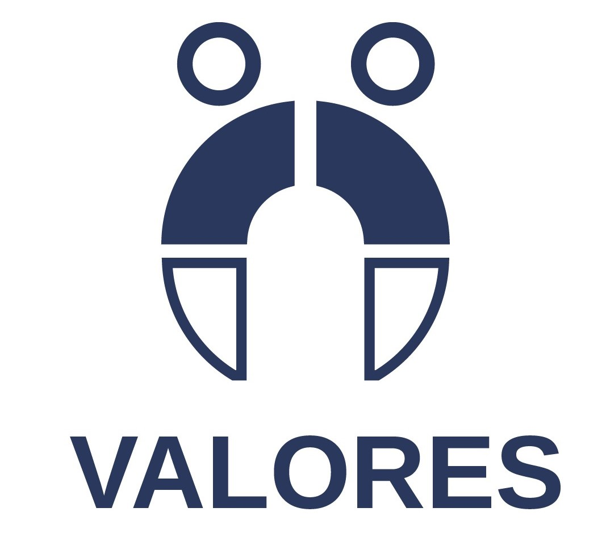

Creemos que cada perforación es más que un accesorio: es una manera de contar tu historia, de marcar momentos importantes o simplemente de expresar quién eres. Contamos con servicio bilingüe (español e inglés) para recibir tanto a clientes locales como a visitantes de todo el mundo, convirtiéndonos en un punto de encuentro para quienes buscan calidad y estilo.

Ofrecer a cada cliente una experiencia única y segura en el arte del piercing, garantizando altos estándares de higiene, materiales de calidad y un servicio profesional y personalizado. Buscamos que cada perforación sea más que un accesorio: una forma de expresión individual, acompañada de confianza y respeto por la identidad de quienes nos eligen.

Ser el estudio de piercings de referencia en Puerto Vallarta y México, reconocido por la excelencia en el servicio, la innovación en tendencias y el compromiso con la seguridad y el bienestar de nuestros clientes. Aspiramos a construir una comunidad donde el arte corporal sea valorado como una forma legítima y auténtica de expresión personal.

Seguridad y Salud: La higiene es nuestra prioridad. Cumplimos con protocolos de esterilización y materiales de calidad médica para garantizar una experiencia segura en cada perforación.
Profesionalismo: Cada procedimiento es realizado por especialistas capacitados que combinan técnica, precisión y un trato respetuoso. Creatividad y Estilo: Nos apasiona crear piercings que destaquen tu personalidad, siguiendo las últimas tendencias en joyería y diseño.
Confianza y Transparencia: Informamos cada paso del proceso, desde los materiales hasta los cuidados posteriores, para que tomes decisiones con tranquilidad.
Experiencia del Cliente: Cada visita es más que un servicio; buscamos que te sientas acompañado, cómodo y seguro, desde la elección de tu pieza hasta el resultado final.
